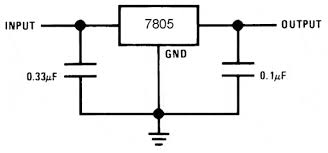
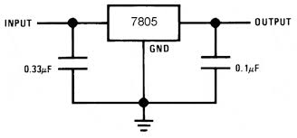
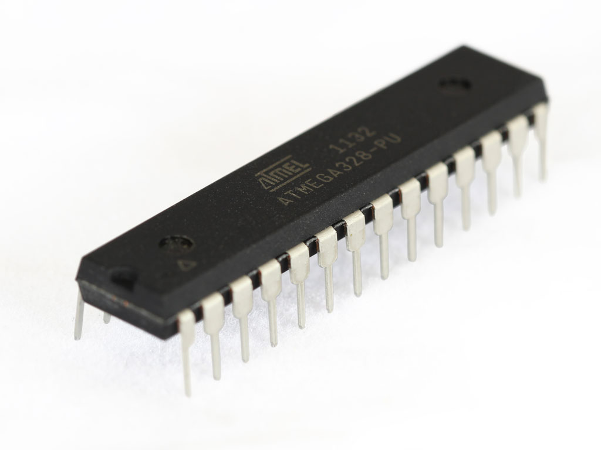

{kind=link}

Di seguito s’illustra un progetto di un’automobile comandata da uno smartphone tramite la connessione Bluetooth. E’ stata presa una automobilina RC Fiat 500 (7cm di larghezza x 20 cm di lunghezza x 6 cm di altezza) da cui li è stata tolta completamente l’elettronica interna ed è stata sostituita da quella da me progettata. Questo progetto integra al suo interno il microcontrollore ATMega328p.
L’obiettivo di questo progetto è realizzare un’automobile di ridotte dimensioni comandata tramite smartphone. L’automobile è costituita da: 2 batterie a 9V, 2 motori in continua, un modulo Bluetooth HC-05, un AtMega328p, un regolatore di tensione LM7805 e un driver motori L293D.
L’alimentazione è separata per la logica e per i motori, ed è fornita da due batterie da 9V. Questo perché i motori in fase di avvio o di stallo richiedono talmente tanta corrente da doverla sottrarre all’ATmega328p, quindi spegnendolo e di conseguenza fermando l’automobile.
Il regolatore di tensione LM7805 prende in ingresso la tensione di 9V della batteria e in uscita fornisce 5V necessari all’alimentazione dell’ATMega328p e al modulo Bluetooth.

 

Questa scheda permette un dialogo con dispositivi Bluetooth tramite comunicazione seriale. Ha una portata di 10mt, si imposta facilmente tramite comandi AT ed è programmabile sia come master che come slave. Accetta alimentazione e comandi sia a 5Vdc che a 3,3Vdc.
L’ATMega328p è il microcontrollore utilizzato dall’Arduino UNO, questo permette di usare codice Arduino in un progetto senza avere una intera e ingombrante scheda. Per utilizzare l’ATMega328p sono necessari un oscillatore al quarzo da 16Mhz, una tensione di alimentazione di 5V e una connessione seriale.

Può pilotare indipendentemente una coppia di motori CC da 0.6 A (max) con voltaggio da 4.5 a 36 volt. E' dotato di una protezione interna che, in caso di surriscaldamento, limita la corrente in uscita fino al ripristino della temperatura ottimale.

Sia il motore posteriore che quello anteriore sono i motorini dell’automobile originale, che sono dei semplici motorini in continua delle mini 4WD. Vengono alimentati dalla batteria a 9V a loro dedicata.
Il pcb e lo schema elettrico sono stati realizzati mediante l’utilizzo del software EAGLE CAD 7.1
/////////////// DICHIARAZIONE PIN ////////////////////////////
int MotFrontA=5; // Motore Davanti A
int MotFrontB=6; // Motore Davanti B
int MotBackA=9; // Motore Dietro A
int MotBackB=10; // Motore Dietro B
//////////////// VARIABILI /////////////////////////////
int velAvanti=70;
int velIndietro=70;
int velDestra=80;
int velSinistra=80;
int velSpinta=130;
boolean enableComunication=false; // Flag che serve ad abilitare e disabilitare lo scambio di dati
String stringa=""; // Stringa ricevuta via bluetooth
//////////// IMPOSTAZIONI ////////////////////////////////
void setup()
{
// PIN MOTORI:
pinMode(MotFrontA, OUTPUT); // Motore Davanti A
pinMode(MotFrontB, OUTPUT); // Motore Davanti B
pinMode(MotBackA, OUTPUT); // Motore Dietro A
pinMode(MotBackB, OUTPUT); // Motore Dietro B
setupBlueToothConnection();
}
void loop()
{
char recvChar; // Variabile che contine il byte ricevuto via bluetooth
if(Serial.available()){ //check if there's any data sent from the remote bluetooth shield
recvChar = Serial.read(); // Leggo 1 byte dallo stack di dati ricevuti
if(recvChar=='c'){
enableComunication=false; // Per disabilitare lo scambio di dati
setupBlueToothConnection();
}
if(enableComunication){ // Se lo scambio di dati è abilitato
stringa="";
stringa.concat(recvChar);
while(Serial.available()){
recvChar = Serial.read();
stringa.concat(recvChar);
}
if(stringa=="a")AVANTI();
if(stringa=="d")DESTRA();
if(stringa=="s")SINISTRA();
if(stringa=="i")INDIETRO();
if(stringa=="f")FERMO();
if(stringa=="u")AUMENTA();
}
if(recvChar=='o')enableComunication=true; // Per abilitare lo scambio di dati
}
}
void AUMENTA()
{
velAvanti=velAvanti+10;
velIndietro=velIndietro+10;
velDestra=velDestra+10;
velSinistra=velSinistra+10;
velSpinta=velSpinta+10;
}
void AVANTI()
{
digitalWrite(MotFrontA, LOW);
digitalWrite(MotFrontB, LOW);
digitalWrite(MotBackA, LOW);
analogWrite(MotBackB, velSpinta);
delay(300);
analogWrite(MotBackB, velAvanti);
}
void DESTRA()
{
digitalWrite(MotFrontA, HIGH);
digitalWrite(MotFrontB, LOW);
digitalWrite(MotBackA, LOW);
analogWrite(MotBackB, velSpinta);
delay(300);
analogWrite(MotBackB, velDestra);
}
void SINISTRA()
{
digitalWrite(MotFrontA,LOW);
digitalWrite(MotFrontB,HIGH);
digitalWrite(MotBackA,LOW);
analogWrite(MotBackB,velSpinta);
delay(300);
analogWrite(MotBackB,velSinistra);
}
void INDIETRO()
{
digitalWrite(MotFrontA,LOW);
digitalWrite(MotFrontB,LOW);
analogWrite(MotBackA,velSpinta);
delay(300);
analogWrite(MotBackA,velIndietro);
digitalWrite(MotBackB,LOW);
}
void FERMO()
{
digitalWrite(MotFrontA,LOW);
digitalWrite(MotFrontB,LOW);
digitalWrite(MotBackA,LOW);
digitalWrite(MotBackB,LOW);
}
void setupBlueToothConnection()
{
Serial.begin(38400); // Set BluetoothBee BaudRate to default baud rate 38400
Serial.print("\r\n+STWMOD=0\r\n"); // set the bluetooth work in slave mode
Serial.print("\r\n+STNA=ArduinoBluetooth\r\n"); // set the bluetooth name
Serial.print("\r\n+STOAUT=1\r\n"); // Permit Paired device to connect me
Serial.print("\r\n+STAUTO=0\r\n"); // Auto-connection should be forbidden here
delay(2000); // This delay is required.
Serial.print("\r\n+INQ=1\r\n"); // make the slave bluetooth inquirable
Serial.println("The slave bluetooth is inquirable!");
delay(2000); // This delay is required.
Serial.flush();
}

Inizialmente è stata progettata un'altra basetta elettronica con l’alimentazione per l’ATmega328p e per i motori comune. Ma i motori quando andavano in stallo richiedevano talmente tanta corrente da doverla sottrarre all’ATmega328p, quindi spegnendolo e di conseguenza fermando l’automobile. Sfortunatamente non è stato possibile reperire un modulo Bluetooth hc-05 per l’automobile ma è stata usata una shield Bluetooth compatibile.